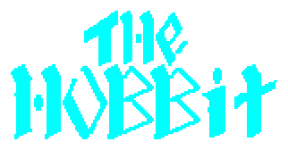
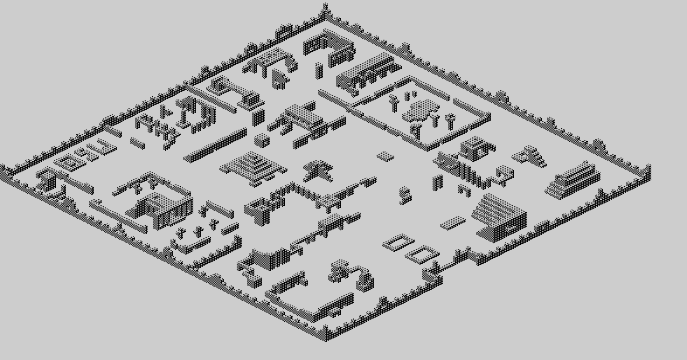
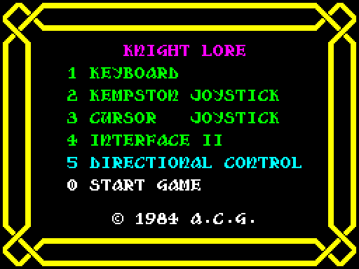
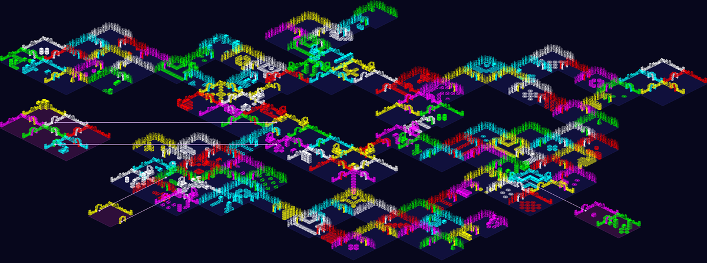
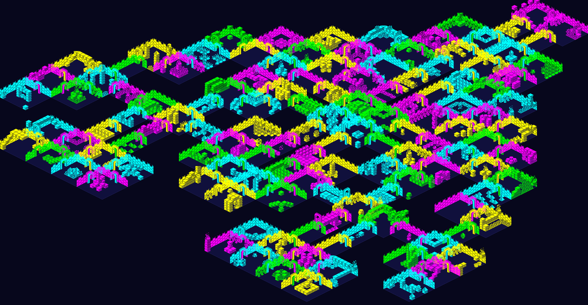
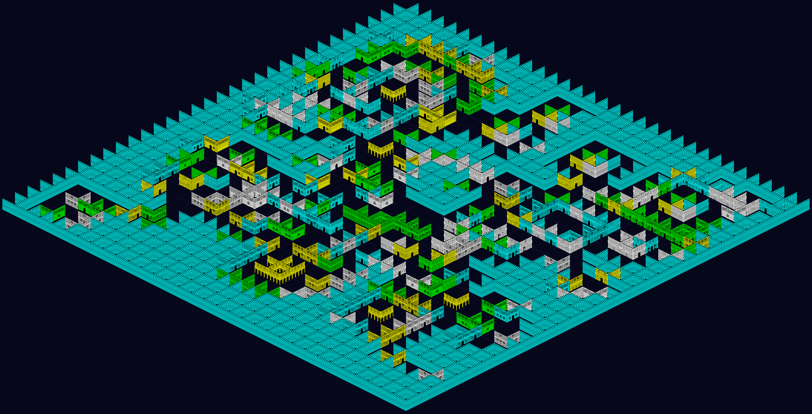

ZX Spectrum game disassemblies
Commented disassemblies of Spectrum games, built with SkoolKit from the original tapes by the scripts in
jonsole/zx-spectrum-disassemblies. Each reassembles to exactly the bytes it was taken from:
the source files below assemble with sjasmplus.

The Hobbit (1982, Beam Software / Melbourne House)
The v1.2 tape, every routine and table named and described: the parser and its sentence patterns, the message compressor,
the picture interpreter, the characters' scripts, the timers and the end of every turn. With a page on
how the game works and deep dives on
how a sentence is understood,
how the characters live,
how a fight is decided,
how the text is stored and told and
how a picture is drawn, each following the game's own
code; a map of the whole game with layers for scoring places,
dark places, the hidden roads and where everything starts; and pages for its
locations (each with its picture),
objects, characters and
actions; animations from
real games, including the characters roaming the map; its sound (it has
none), and its bugs, tested pokes and
trivia.
The whole disassembly as one commented source file: hobbit.asm.

Atic Atac (1983, Ultimate Play the Game)
All 30208 bytes, with 631 named entries. With a map of the castle, floor by floor, with layers for
the A.C.G. key's pieces, the keys, the food, the big five and the trapdoors; pages on
how the tape protects itself,
how the game is put together and deep dives on
how a room is drawn, how the player moves,
the monsters, doors, keys and trapdoors and
food, health and the A.C.G. key, each following the game's own code;
where its data goes, the
room types, the
sprites, the
graphics, animations from real games, and the
sounds (each one recorded to play), and its
bugs,
trivia and
tested pokes.
The whole disassembly as one commented source file: aticatac.asm.

Ant Attack (1983, Sandy White / Quicksilva)
All 41984 bytes the tape loads, from the system variables and the game's own BASIC up, every routine named and commented and
every instruction but three seen to run. With pages on how the game works — the soft
solid 3D, the ants that are part of the map, the loader that loads over itself — and deep dives on
how a scene is drawn, how people move,
how the ants hunt, how a grenade flies and
finding and rescuing, each following the game's own code through real frames;
the city of Antescher, with layers for the gate, the ants' nest and every place someone waits,
and drawn whole in the game's own projection; the ten levels,
the sprites, animations,
every sound, recorded from the game's own routines and
every message; and its bugs,
tested pokes and trivia.
The whole disassembly as one commented source file: antattack.asm.

Knight Lore (1984, Ultimate Play the Game)
The first Filmation game, all 40696 bytes: every routine and table titled and described, from the object records and the
depth sort that draws the isometric scene back to front, to the sprites that are flipped in place, the rooms, day and night, and the
wizard's cauldron. With pages on how it works -- how a moving object is drawn,
the depth sort, collision,
day, night and the werewolf and the charms and the
cauldron -- on how the castle is built, with a map of all 128 rooms, each drawn
by the game's own code, and layers for where a game starts, the charms and the dangers; its
animations and every sound and tune, recorded
from its own routines; its scenery,
the templates rooms are furnished from, every object
type and every sprite; and on how the game is put
together, its bugs, tested
pokes and trivia, and where the code
map comes from -- tcdev's disassembly, as converted by
Michael R. Cook, whose names and boundaries are used with credit.
The whole disassembly as one commented source file: knightlore.asm.
And a room editor: open a snapshot of your own copy of the game, rearrange its rooms,
the templates they are built from, where the collectables lie and where a game starts, and download the game again with your
castle in it. It all happens in the page; nothing is uploaded.

Pentagram (1986, Ultimate Play the Game)
Sabreman's fourth adventure, on Knight Lore's engine: all 41472 bytes from $5E00, every routine and table titled and
described, disassembled from the tape and mapped by playing it. With pages on how it works --
how the game is put together,
how a moving object is drawn, how things move and
collide (lifts, conveyors, crumbling blocks), rooms and doorways (each arch carries
the room it leads to), the well, the bucket and the pentagram and
bolts, things from the sky and the monsters -- on
the world, every one of its 139 rooms drawn by the game's own code and put
together into one map with layers for the start, the wells, the quest and the dangers; its
scenery, templates,
every graphic and sprite;
animations and every sound and tune, recorded from
its own routines; and its bugs (too much in one room crashes it),
tested pokes and trivia.
The whole disassembly as one commented source file: pentagram.asm.
And a room editor: open a snapshot of your own copy of the game, rearrange its
rooms, the templates they are built from, their doorways and where a game starts, and download the game again with your
world in it. It all happens in the page; nothing is uploaded.

Alien 8 (1985, Ultimate Play the Game)
The Filmation game between Knight Lore and Pentagram: all 42240 bytes from $5B00, every routine and table titled and
described, disassembled from the tape and mapped by playing it. With pages on how it works --
how the game is put together,
how a moving object is drawn, how the robot moves and
turns (and the turn that forgets he was walking), rooms and doorways,
valves, sockets and the cryogenic chambers and
the clock, the remote robots and the dangers -- on
the station, every one of its 128 rooms drawn by the game's own code on Knight
Lore's grid, with layers for the start, the chambers by valve kind, the valves, the robots and the dangers; its
backgrounds, templates,
every graphic and sprite;
animations and every sound and tune, recorded from
its own routines; and its bugs,
tested pokes and trivia -- among them
Knight Lore's werewolf sound, left in with nothing to play it.
The whole disassembly as one commented source file: alien8.asm.
And a room editor: open a snapshot of your own copy of the game, rearrange its
rooms, the templates they are built from, where the valves lie and where a game starts, and download the game again with
your ship in it. It all happens in the page; nothing is uploaded.

Nightshade (1985, Ultimate Play the Game)
The first Filmation II game, a scrolling town in place of rooms: all 42240 bytes from $5B00, every routine and table
titled and described, disassembled from the protected tape and mapped by playing it. With pages on how it works --
how the game is put together (and the four ways it guards itself),
how the town is drawn (walls that claim screen columns, outlines in front),
how things move, the monsters, antibodies
and the creature and the quest -- on
the whole town, every building drawn by the game's own code, with layers for the
cell types, the cells that count, where finds come from, where a game starts and where the villains and objects go;
its buildings, cell types,
tiles, graphic table and
sprites; animations and
every sound and tune, recorded from its own routines; and its
bugs, tested pokes and
trivia -- among them villains that hum the ROM, a hundred per cent
printed in the wrong font, and a stack that crashes the 157th game.
The whole disassembly as one commented source file: nightshade.asm.
The games themselves are copyright their authors and publishers. These pages quote the game's code, text and pictures
for the purpose of study; you will need to own the original game to build the disassembly yourself, and the repository's scripts
expect you to supply your own tape image.